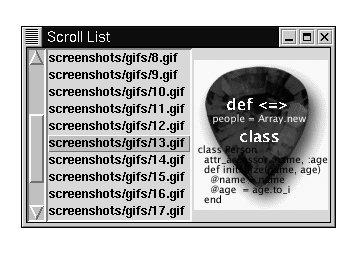

Ruby和 Tk
译者注：因原来的发布不带图片，所以本章图片选自
http://www.ruby.no/prosjekt/ProgrammeringIRuby/ext_tk.html，不是英语，可能看不清，不过界面都显示出来了。
Ruby Application Archive （简称RAA）包括几个支持你使用Ruby来创建GUI（Graphical User Interface）程序的扩展（extensions ），包括Tcl/Tk扩展，GTK扩展，OpenGL扩展和其它的一些。
TK扩展是随着Ruby软件一起发布的，可以在Unix和windows上使用。为了使用它，你需要在你的系统上安装Tk。Tk是一个庞大的系统，关于它的书已经有很多了，所以我们不会在这里浪费太多的时间和资源去深入的研究Tk本身，而是着重于如何在Ruby中使用Tk。要想很好的在Ruby中使用Tk，你需要下面的一些参考书中的一本。因为Tk和Ruby的绑定和Tk到Perl的绑定类似，所以你可以用Learning Perl/Tk 或者 Perl/Tk Pocket Reference
Tk以一种组合的方式工作，就是说你首先创建一个容器（container ）部件（widget ），比如TkFrame 或者TkRoot，然后在它上面继续创建其它部件，比如按钮或者标签（labels）。当你打算开始启动GUI的时候，调用Tk.mainloop，然后Tk引擎将接替对程序的控制，显示各个窗口部件，响应各种GUI事件。
Ruby中一个简单的Tk应用程序像下面一样：
require 'tk'
root = TkRoot.new { title "Ex1" }
TkLabel.new(root) {
text 'Hello, World!'
pack { padx 15 ; pady 15; side 'left' }
}
Tk.mainloop
|
界面如图：
让我们更近距离的看看这些代码。在装载完tk扩展模块之后，我们用TkRoot.new建立了一个最顶级（root-level ）的框架（frame）。然后，我们建立了一个标签部件作为这个父级窗口的子部件，并设置了这个标签的一些属性，最后，最后，我们让父窗口显示（pack？）并进入GUI主事件循环。
显示的建立一个顶级窗口是一个很好的习惯，尽管你不建立这个窗口程序也能工作。例如上面的代码即使变为以下三行也能工作：
require 'tk'
TkLabel.new { text 'Hello, World!' }
Tk.mainloop
|
这样就可以工作了，再参考一下上面我们提到的Perl/Tk的书，我们就能写出非常好的GUI程序了。但是，下面我们还是会更详细的讲述一下Tk在Ruby中的使用。
创建一个窗口部件很容易，在Ruby中这些部件名字都在原来的基础上加上了Tk前缀，比如，Label，Button和Entry变成了TkLabel，TkButton和TkEntry。你可以通过使用new方法创建一个部件，就像创建其它对象一样。如果你创建组件的时候没有指定父部件的名字，那么将把顶级窗口作为默认父部件。我们有时候也会在创建部件的时候设置一些部件属性（选项），比如颜色，大小等等；有时候，我们也希望从这些部件得到程序返回信息，我们可以设置回调（callbacks ）方法和共享数据（sharing data）。
如果你看一下Tk的参考手册（比如关于Perl/Tk），你会发现这些窗口部件选项可以用一个连字符列出（listed with a hyphen ），就像命令行参数那样。在Perl/Tk中，你可以将这些参数放入一个Hash传给这个widget，在Ruby中你也可以这么做，但是，你也可以通过一个代码block来设置这些参数：选项的名称作为方法名，选项的值作为这个方法的参数。一个widget创建时候的第一个参数为父部件，然后后面跟一个哈希结构的选项列表，或者以代码块格式来设置这些选项。所以，下面这两项实际上是相等地。
TkLabel.new(parent_widget) {
text 'Hello, World!'
pack('padx' => 5,
'pady' => 5,
'side' => 'left')
}
# or
TkLabel.new(parent_widget, text => 'Hello, World!').pack(...)
|
不过有一个需要注意的小地方：有时候变量的作用域可能出乎你的想象。block是在widget的环境上下文中执行（evaluated ），而不是调用者的（caller's）。这就意味着调用者的实例变量在这个block中不可用，但是在包含它的范围内的局部变量和全局变量（不是你曾经用过的）。我们将在后面的例子中使用这两种方法设置widget的选项。
不确定的英文原文：The block is actually in the context of the widget's object, not the . This means that the caller's instance variables will not be available in the block, but local variables from the enclosing scope and globals (not that you ever use those) will be.
距离（比如上面例子中的padx和pady）默认单位为象素，但是你也可以指定为其它单位，比如以c为后缀表示单位为厘米，i表示英寸，m表示毫米，p表示点（point）等。
我们可以通过方法回调和绑定变量（binding variables）从窗口部件得到信息。
回调（Callbacks ）很容易使用。command选项（比如下面例子中的TkButton）接收一个Proc对象，这个Proc对象会在这个回调触发的时候被调用。这里，我们可以用 Kernel::proc 将block {exit}转换为一个Proc对象。
TkButton.new(bottom) {
text "Ok"
command proc { p mycheck.value; exit }
pack('side'=>'left', 'padx'=>10, 'pady'=>10)
}
|
我们也可以使用TkVariable 代理将Ruby的变量绑定到 Tk widget的值。注意下面的TkCheckButton 是如何创建的，variable选项接受一个TkVariable类型的参数，这个例子里我们用 TkVariable.new首先创建了这个变量。访问变量mycheck.value将根据这个选择框是否被选中而返回0或1。你可以在各种支持variable选项的部件中使用这种方法，比如radio，button和文本框。
mycheck = TkVariable.new
TkCheckButton.new(top) {
variable mycheck
pack('padx'=>5, 'pady'=>5, 'side' => 'left')
}
|
除了在创建一个部件的时候设定选项，我们也可以在这个部件运行的时候重新配置它。每个widget都支持configure方法，这个方法接收一个Hash或者代码块作为参数，和new方法类似，比如我们可以修改一下第一个例子，使它的按钮在按下的时候能给修改标签的文本。
lbl = TkLabel.new(top) { justify 'center'
text 'Hello, World!';
pack('padx'=>5, 'pady'=>5, 'side' => 'top') }
TkButton.new(top) {
text "Cancel"
command proc { lbl.configure('text'=>"Goodbye, Cruel World!") }
pack('side'=>'right', 'padx'=>10, 'pady'=>10)
}
|
所以，当你按Cancel按钮的时候，标签的文本将由``Hello, World!'' 变为``Goodbye, Cruel World!''。
你也可以用cget方法取得某个widget的某个选项的值。
require 'tk' |
b = TkButton.new { |
text "OK" |
justify 'left' |
border 5 |
} |
b.cget('text') |
? |
"OK" |
b.cget('justify') |
? |
"left" |
b.cget('border') |
? |
5 |
下面来看一个稍微长点例子，一个真正的应用程序－``pig Latin''生成器。输入一个短语，比如 ``Ruby rules'' ，然后按下按钮``Pig It''，程序将立即把这个短语翻译为
require 'tk'
class PigBox
def pig(word)
leadingCap = word =~ /^A-Z/
word.downcase!
res = case word
when /^aeiouy/
word+"way"
when /^([^aeiouy]+)(.*)/
$2+$1+"ay"
else
word
end
leadingCap ? res.capitalize : res
end
def showPig
@text.value = @text.value.split.collect{|w| pig(w)}.join(" ")
end
def initialize
ph = { 'padx' => 10, 'pady' => 10 } # common options
p = proc {showPig}
@text = TkVariable.new
root = TkRoot.new { title "Pig" }
top = TkFrame.new(root)
TkLabel.new(top) {text 'Enter Text:' ; pack(ph) }
@entry = TkEntry.new(top, 'textvariable' => @text)
@entry.pack(ph)
TkButton.new(top) {text 'Pig It'; command p; pack ph}
TkButton.new(top) {text 'Exit'; command {proc exit}; pack ph}
top.pack('fill'=>'both', 'side' =>'top')
end
end
PigBox.new
Tk.mainloop
|
界面如图：
| Sidebar: 布局管理器？（Geometry Management） |
|
在本章的例子中，我们已经看到了pack方法，这是一个非常重要的方法，如果你不调用这个方法，那么你的widget将永远不会出现，pack命令将告诉geometry manager将这个部件按照设定的参数放到合适的位置上。支持三种命令：
| 命令 |
定位标准 |
pack |
灵活的，基于约束（constraint）的定位 |
place |
Absolute position |
grid |
Tabular (row/column) position |
 |
因为pack可能是最常用的方法了，所以我们的例子里都使用pack方法。
译者注：如果一个方法（method）没有参数，有时候也叫做命令（command） |
我们的窗口部件是暴露给现实世界的，人们可以在它上面点击，移动鼠标，进入这个组件等。所有的这些事情，都会产生一个事件，我们也可以捕获这些事件。你可以通过窗口部件的bind方法，给它的某一事件绑定一个事件处理，通常，这个时间处理是一个代码块（block of code）。
比如，我们创建了一个用来显示一个图像的按钮，我们希望鼠标在这个按钮上移动的时候图像会变化，则可以用以下代码：
image1 = TkPhotoImage.new { file "img1.gif" }
image2 = TkPhotoImage.new { file "img2.gif" }
b = TkButton.new(@root) {
image image1
command proc { doit }
}
b.bind("Enter") { b.configure('image'=>image2) }
b.bind("Leave") { b.configure('image'=>image1) }
|
首先，我们用TkPhotoImage创建了2个GIF图像，然后，创建了一个按钮，名字为b，它显示的图像为image1，然后我们将它的Enter方法绑定一个将它的图像变为image2的代码块，Leave事件帮定到恢复image1图像的代码块。
这个例子显示了简单的Enter和Leave方法，而且，bind方法的参数可以有几个子字符串构成，每个串之间用减号分割，顺序为modifier-modifier-type-detail。 修饰符（Modifiers ）可以在Tk的参考手册中找到，包括Button1, Control, Alt, Shift等等，type是事件的名字（遵循X11的命名习惯），包括ButtonPress，KeyPress和Expose等。Detail或者是一个用于表示button的从1到5的数字，或者用来表示键盘输入的keysym。比如，如果我们想处理事件：在control键被按下的时候释放鼠标的button1，可以如下表示：
Control-Button1-ButtonRelease
或者
Control-ButtonRelease-1
事件本身也会包含一些特定的字段（fields ），比如事件的发成的时间，坐标x，y的值等。bind可以将这些属性传给一个回调方法，这叫做event field codes 。这种方法使用起来类似printf的规则，比如，为了得到一个鼠标移动时候的xy坐标值，我们可以给bind方法传3个参数，第二个参数是一个用于回调的Proc对象，第三个参数是包括事件属性的字符串（event field string）
canvas.bind("Motion", proc{|x, y| do_motion (x, y)}, "%x %y")
|
Tk提供了一个画布（canvas）部件，你可以在上面进行绘画，然后输出为PostScript 格式。这里是一个简单的例子，来自Ruby发布。按下鼠标按键1，然后拖动，当松开按键1的时候，将会在两个点之间划一条直线。按下按键2将会把这个画布转出为适合打印的PostScript 格式。
require 'tk'
class Draw
def do_press(x, y)
@start_x = x
@start_y = y
@current_line = TkcLine.new(@canvas, x, y, x, y)
end
def do_motion(x, y)
if @current_line
@current_line.coords @start_x, @start_y, x, y
end
end
def do_release(x, y)
if @current_line
@current_line.coords @start_x, @start_y, x, y
@current_line.fill 'black'
@current_line = nil
end
end
def initialize(parent)
@canvas = TkCanvas.new(parent)
@canvas.pack
@start_x = @start_y = 0
@canvas.bind("1", proc{|e| do_press(e.x, e.y)})
@canvas.bind("2", proc{ puts @canvas.postscript({}) })
@canvas.bind("B1-Motion", proc{|x, y| do_motion(x, y)}, "%x %y")
@canvas.bind("ButtonRelease-1",
proc{|x, y| do_release (x, y)}, "%x %y")
end
end
root = TkRoot.new{ title 'Canvas' }
Draw.new(root)
Tk.mainloop
|
只需要用鼠标点几下，就能创作出你的杰作了。
界面如下：
除非你只想画一个非常小的图画，否则上面的程序肯定不会很适合的。TkCanvas, TkListbox和TkText 都可以支持滚动条，所以你能处理一个“大图象”的一部分
滚动条和widget之间的通信是双向的，移动滚动条的话widget的视图也会移动，而widget的试图被其他方法移动之后，滚动条也必须相应的变化。
我们以前还没有怎么介绍列表框（listbox），我们下面的滚动条的例子将使用一个列表框。下面的例子中，我们先创建一个普通的TkListbox，然后，又创建一个TkScrollbar，通过command选项为这个滚动条增加了一个回调，这个回调将调用列表的yview方法，这个方法用来在纵坐标方向改变list的可见部分。
在回调建立之后，我们反过来也需要在list在移动之后，滚动条的设置也要改变，可以用TkScrollbar#set方法。下面的例子只是下一节例子中的一部分代码。
list_w = TkListbox.new(frame, 'selectmode' => 'single')
scroll_bar = TkScrollbar.new(frame,
'command' => proc { |*args| list_w.yview *args })
scroll_bar.pack('side' => 'left', 'fill' => 'y')
list_w.yscrollcommand(proc { |first,last|
scroll_bar.set(first,last) })
|
我们可以用几百页来继续讨论Tk，但是那是其它的书本的内容了。下面的程序是我们最后的Tk例子，一个简单的GIF图像查看器。你可以从一个列表框选择一个GIF文件名，然后显示一个适应窗口大小的图像。这里有一些内容需要指出。
你是否看见过一个应用程序将光标设置为忙状态（沙漏）而忘了改回来吗？在Ruby中则不必担心这种情况的发生。还记得 File.new 方法能接收一个block而确保文件最后被关闭吗，我们可以同样的在busy方法中使用这种机制，来确保最后光标被恢复，如下面的例子。
这个例子也显示了TkListbox 的一些其它常用方法，向它增加元素，建立鼠标键松开时候的事件回调[你也许需要鼠标松开事件，而不是按下事件，鼠标按下的时候表示选择了一个widget]，并且得到选择的那一个元素等。
到目前位置我们用TkPhotoImage 直接来显示图片，我们也可以对它进行缩放，抽样（subsample），或者只显示它的一部分。这里，我们用到了subsample 来使图片适合预览。
require 'tk'
def busy
begin
$root.cursor "watch" # Set a watch cursor
$root.update # Make sure it updates the screen
yield # Call the associated block
ensure
$root.cursor "" # Back to original
$root.update
end
end
$root = TkRoot.new {title 'Scroll List'}
frame = TkFrame.new($root)
list_w = TkListbox.new(frame, 'selectmode' => 'single')
scroll_bar = TkScrollbar.new(frame,
'command' => proc { |*args| list_w.yview *args })
scroll_bar.pack('side' => 'left', 'fill' => 'y')
list_w.yscrollcommand(proc { |first,last|
scroll_bar.set(first,last) })
list_w.pack('side'=>'left')
image_w = TkPhotoImage.new
TkLabel.new(frame, 'image' => image_w).pack('side'=>'left')
frame.pack
list_contents = Dir["screenshots/gifs/*.gif"]
list_contents.each {|x|
list_w.insert('end',x) # Insert each file name into the list
}
list_w.bind("ButtonRelease-1") {
index = list_w.curselection[0]
busy {
tmp_img = TkPhotoImage.new('file'=> list_contents[index])
scale = tmp_img.height / 100
scale = 1 if scale < 1
image_w.copy(tmp_img, 'subsample' => [scale,scale])
tmp_img = nil # Be sure to remove it, the
GC.start # image may have been large
}
}
Tk.mainloop
|
译者注：上面代码倒数第七行，即copy图像的那一行，在我的系统（2000＋ruby 1.8.2）上运行出错，改为如下即可通过：image_w.copy(tmp_img, '-subsample 2 2')
界面如下：

最后再来看看垃圾收集，当我们有一些很大的图片时，我们不想让这些图片在不需要的时候占用内存，所以我们把对这个对象的引用设为nil，这就告诉了垃圾收集器立即把这些变量清理。
就说道这里了，你已经初步了解了在Ruby中使用Tk。在很大程度上，你可以轻松的在Ruby中借鉴适用于Perl/Tk的文档，但是这里有一些要注意，不是每个在Perl中实现的方法在Ruby中也被实现，而且也可能存在没有被文档化的功能。在关于Ruby/Tk的书出来之前，你最好还是有什么问题到新闻组上去讨论，或者阅读更多的源代码。
但是通常来说，你会直到如何去做。记住部件的选项可以通过一个哈希或者代码block传给widget，而且TkWidget 中代码块方法的变量作用域在这个widget内，而不是在类的实例中。
Perl/Tk: $widget = $parent->Widget( [ option => value ] )
Ruby: widget = TkWidget.new(parent, option-hash)
widget = TkWidget.new(parent) { code block }
|
你也许不需要保存新创建widget的返回值，尽管这个值可以得到。不要忘了调用一个widget 的pack方法，否则你将不会看到这个部件。
Perl/Tk: -background => color
Ruby: 'background' => color
{ background color }
|
记住代码块的作用域是不同的。
Perl/Tk: -textvariable => \$variable
-textvariable => varRef
Ruby: ref = TkVariable.new
'textvariable' => ref
{ textvariable ref }
|
使用将一个Ruby变量绑定到widget的值，然后，你就可以用TkVariable 里的value的访问方法（TkVariable#value和TkVariable#value=）来直接处理widget的内容了。
Extracted from the book "Programming Ruby - The Pragmatic Programmer's Guide"
Copyright © 2001 by Addison Wesley Longman, Inc. This material may be distributed only subject to the terms and conditions set forth in the Open Publication License, v1.0 or later (the latest version is presently available at http://www.opencontent.org/openpub/)).
Distribution of substantively modified versions of this document is prohibited without the explicit permission of the copyright holder.
Distribution of the work or derivative of the work in any standard (paper) book form is prohibited unless prior permission is obtained from the copyright holder.